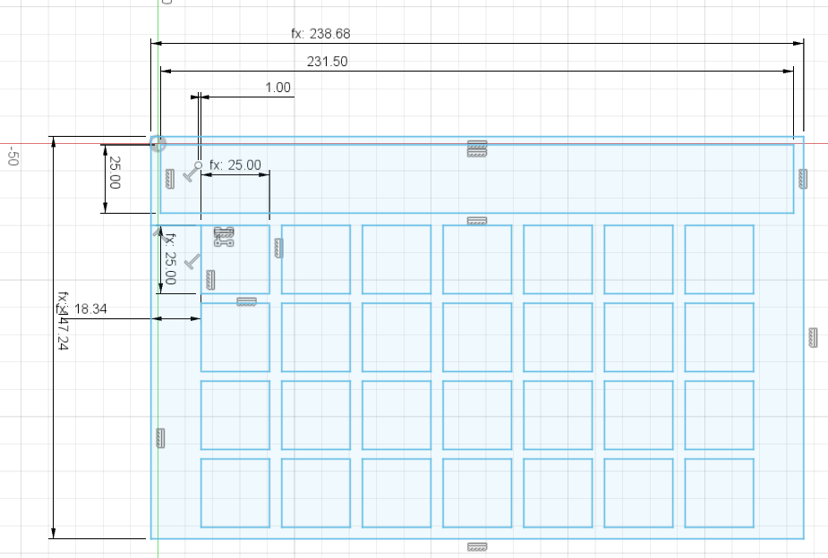
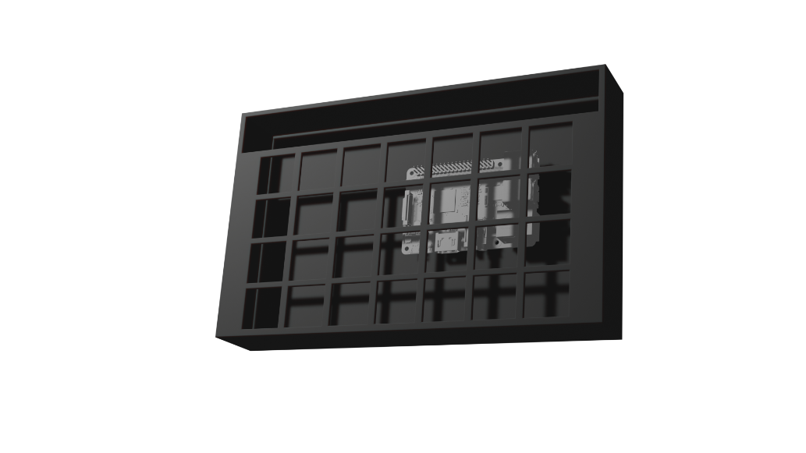
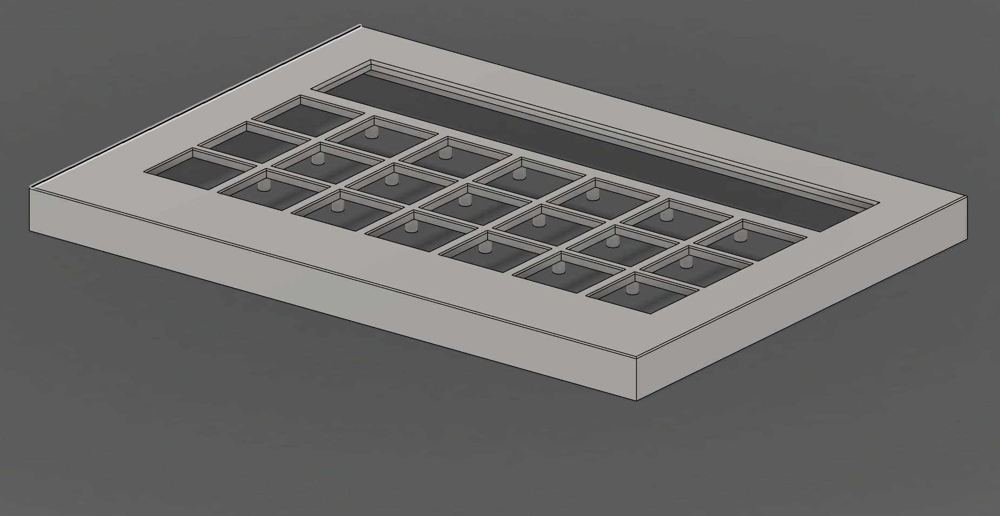
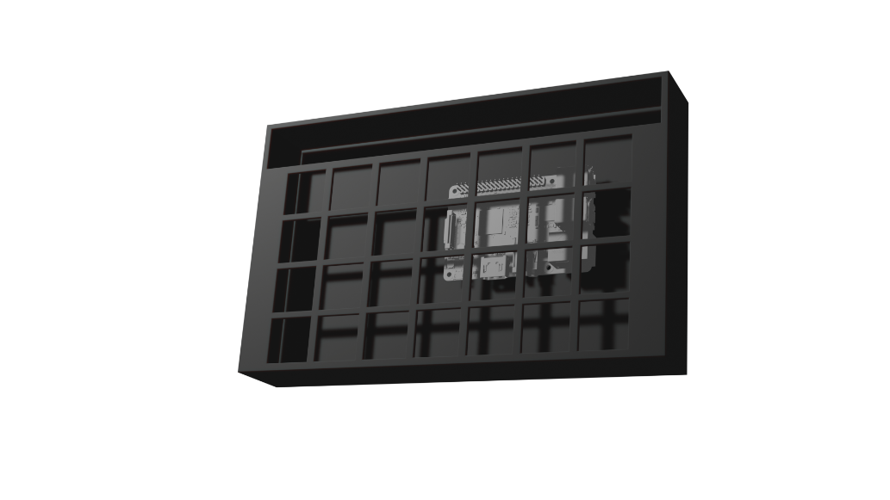
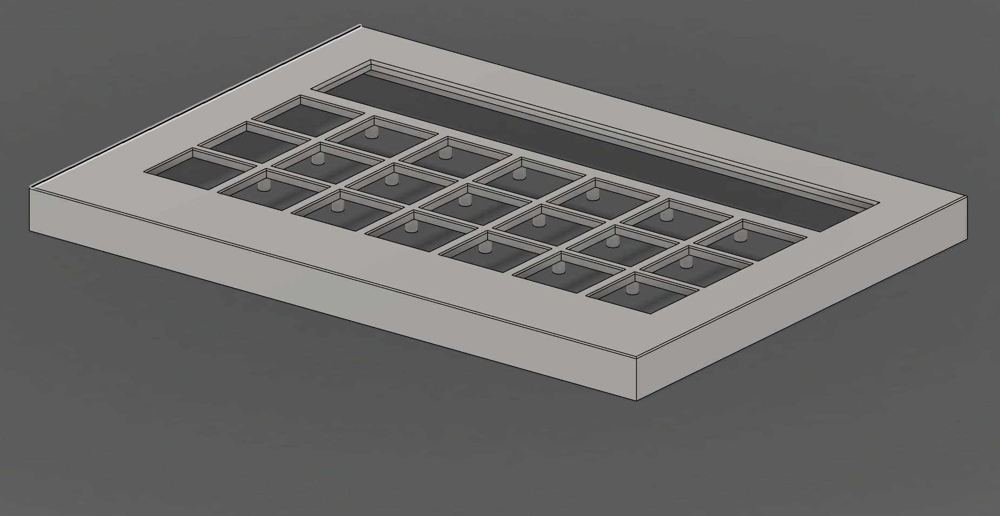

WaveSpeak Accessiblity Tablet
A AAC tablet for those who have difficulties speaking.
WaveSpeak
This project was my headfirst dive into a whole hardware and embedded software. It was for my capstone project for my senior year high school.
Descriptions
This project taught me how to use Fusion 360, KiCad and the Tauri framework. This project was a huge undertaking for me because I had to design a PCB, case, select hardware and figure out how to get a raspberry pi running my software without much effort since writing a GUI operating system from scratch was not in the cards. It was a test of my time management and techincal skills.
More info
The Beginnings
The problem, talker tablets are either properitery, inconvenient or too expensive. This is the problem I wanted to solve, I went out to build a open, cheap, and flexible device that can cater to anyones needs while being easy to build with off the shelf electronics.
So I knew I wanted to get an idea of the case together before I started choosing hardware. I wanted an elgato stream deck style tablet so an array of buttons with a "bar" at the top is what I had in my head opening Fusion 360 to start the sketch.

As you can see, this was quite... optimistic for a design. There's barely space for any sort of electronics or wiring around the preimeter of the case. I had to change this when I finally found a display that I could use for the tablet.
So I Designed some more wiggle room on the sides but even this wasn't enough as the PCB for the display I chose took up more space vertically.
 



After I got the general foot print down, I got the backcase designed with a raspberry pi in it.
I also wanted a space for an outward facing speaker/fan sort of hole so I put the WaveSpeak logo boolean'd in the back.
This design ended up sticking for the rest of the project as it largely went unchanged except for adding support nubs to stop the front case from flexing when handling the tablet.
The Guts
So from the beginning, I knew I wanted a raspberry pi driving the project. I knew it was more than powerful enough to run what I wanted... besides natural text to speech but that's later. I also knew I wanted the software to be fairly simple on my side aka "I don't want to write the entire operating system from scratch". This landed me onto an operating system called FullPageOS, it's a kiosk focused operating system whose only function is to open a webpage. I decided to use HTML/CSS/JS for my UI since it's easy, well supported, and easy to transfer between backends for any use case.